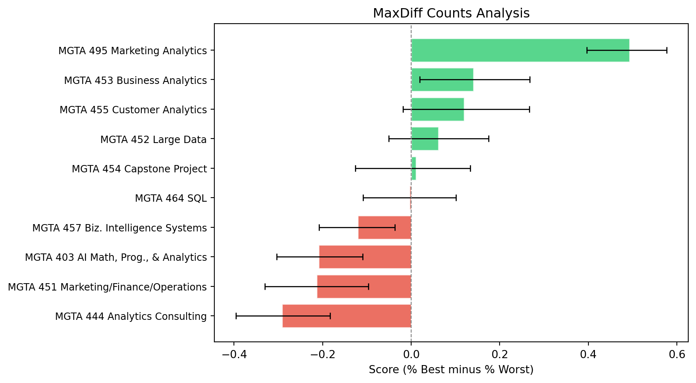
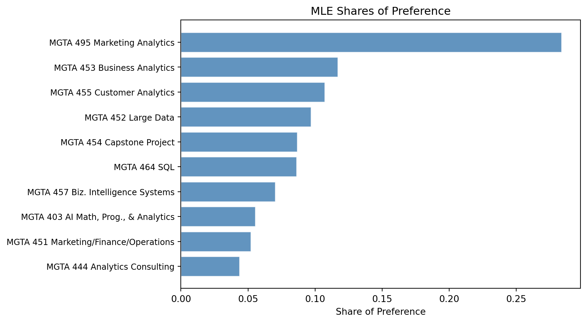
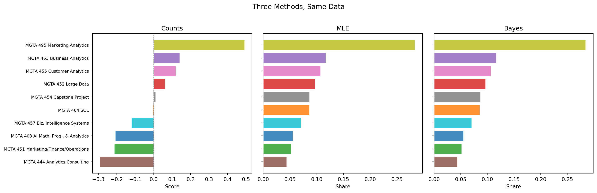

I asked 85 classmates which Rady MSBA courses they prefer, then estimated preferences using counts, MLE, and a Bayesian MCMC sampler. The results mostly agree, but the middle of the ranking is messier than you’d think.
Author
Yafei (Judie) Zhang
Published
May 25, 2025
Introduction
Here’s a question I’ve thought about since starting the MSBA: which classes do students actually look forward to, and which ones feel more like a requirement to get through? You could just ask people to rate each class 1 to 10, but I don’t trust that approach. Some people are generous and give everything a 7. Others are harsh. The numbers mean different things across respondents and there’s no way to calibrate them afterward.
MaxDiff (also called Best-Worst Scaling) gets around this. You show someone 4 items and ask: which is your favorite? Which is your least favorite? That’s it. People are good at making relative judgments even when absolute ratings are unreliable. And because you’re forcing a tradeoff, you get real differentiation between items instead of everything piling up in the middle of a scale.
Our survey showed each respondent 4 MSBA classes at a time (out of 10 total) and asked them to pick their most and least preferred. They did this 8 times, each time with a different set of 4 classes. From those choices, I want to figure out how much students prefer each class relative to the others.
I’m going to do this three different ways:
A simple counts analysis where I tally how often each class gets picked best vs. worst
A multinomial logit model fit by maximum likelihood (I write the likelihood function from scratch)
The same model fit with a Bayesian MCMC sampler (I write that from scratch too)
I expect the extremes to be consistent across methods. The interesting part is what happens in the mushy middle.
The data
Code
import numpy as npimport pandas as pdimport matplotlib.pyplot as plt# load the two data filesmd = pd.read_csv("maxdiff_design_and_choices.csv", encoding="utf-8-sig")labels = pd.read_csv("maxdiff_item_labels.csv", encoding="utf-8-sig")# clean up the labels file - it has some extra columnslabels.columns = labels.columns.str.strip()labels = labels[['Item #', 'Item']].dropna()labels.columns = ['Item', 'Label']labels['Item'] = labels['Item'].astype(int)# make a dictionary so I can look up class names by item numberlabel_map =dict(zip(labels['Item'], labels['Label']))print("Item-to-label mapping:")for k, v in label_map.items():print(f" {k}: {v}")
Item-to-label mapping:
1: MGTA 403 AI Math, Prog., & Analytics (Summer with Nijs)
2: MGTA 464 SQL (Summer with Nijs)
3: MGTA 451 Marketing/Finance/Operations (Summer with Wilbur/Buti/Shin)
4: MGTA 452 Large Data (Fall with Hansen)
5: MGTA 453 Business Analytics (Fall with August)
6: MGTA 444 Analytics Consulting (Winter with Peterson)
7: MGTA 455 Customer Analytics (Winter with Nijs)
8: MGTA 454 Capstone Project (Spring with Advisor)
9: MGTA 495 Marketing Analytics (Spring with Yavorsky)
10: MGTA 457 Biz. Intelligence Systems (Fall with Schibler)
The response data has one row per item per screen per respondent. I noticed that tasks 9 through 15 only have 2 items each and include an “Item 11” that isn’t in my labels file. These look like follow-up pairwise comparisons with a different format, so I’m filtering down to tasks 1-8 which are the standard 4-item MaxDiff screens.
Code
# keep only the standard 4-item tasksmd4 = md[md['Task'].between(1, 8)].copy()n_respondents = md4['Record ID'].nunique()n_tasks = md4.groupby('Record ID')['Task'].nunique().iloc[0]n_items_per_task = md4.groupby(['Record ID', 'Task']).size().iloc[0]n_items_total = md4['Item'].nunique()print(f"Number of respondents: {n_respondents}")print(f"Tasks per respondent: {n_tasks}")print(f"Items shown per task: {n_items_per_task}")print(f"Total unique items: {n_items_total}")print(f"Total task-observations: {n_respondents * n_tasks}")
Number of respondents: 85
Tasks per respondent: 8
Items shown per task: 4
Total unique items: 10
Total task-observations: 680
So 85 people, 8 screens each, 4 classes per screen, 10 classes total. Each task gives me a best and a worst pick, so that’s 680 x 2 = 1,360 choice observations total.
Sanity check
I want to make sure the data is clean before I do anything with it. Every task should have exactly one Response=1 (best), one Response=-1 (worst), and two Response=0.
Code
# group by respondent and task, check the response patterntask_checks = md4.groupby(['Record ID', 'Task'])['Response'].agg( n_best=lambda x: (x ==1).sum(), n_worst=lambda x: (x ==-1).sum(), n_neither=lambda x: (x ==0).sum())# verifyall_good =Trueifnot (task_checks['n_best'] ==1).all():print("PROBLEM: some tasks don't have exactly 1 best pick") all_good =Falseifnot (task_checks['n_worst'] ==1).all():print("PROBLEM: some tasks don't have exactly 1 worst pick") all_good =Falseifnot (task_checks['n_neither'] ==2).all():print("PROBLEM: some tasks don't have exactly 2 unchosen items") all_good =Falseif all_good:print("All 680 tasks check out: exactly 1 best, 1 worst, 2 unchosen in each.")
All 680 tasks check out: exactly 1 best, 1 worst, 2 unchosen in each.
How often was each item shown?
Good MaxDiff designs show every item roughly the same number of times. If one class appeared way more than others, that would be a problem.
They’re all in the 260-275 range. Balanced enough.
Counts analysis
The most straightforward approach. For each class, I count what fraction of the time it was picked as best (out of the times it was shown) and what fraction it was picked as worst. The score is just the difference:
Score near +1 = almost always picked as the favorite. Near -1 = almost always picked as least favorite. Near zero = either genuinely middle-of-the-road or polarizing.
MGTA 495 Marketing Analytics (Spring with Yavorsky)
274
147
12
53.6%
4.4%
+0.493
1
2
5
MGTA 453 Business Analytics (Fall with August)
270
93
55
34.4%
20.4%
+0.141
2
3
7
MGTA 455 Customer Analytics (Winter with Nijs)
276
104
71
37.7%
25.7%
+0.120
3
4
4
MGTA 452 Large Data (Fall with Hansen)
276
77
60
27.9%
21.7%
+0.062
4
5
8
MGTA 454 Capstone Project (Spring with Advisor)
272
72
69
26.5%
25.4%
+0.011
5
6
2
MGTA 464 SQL (Summer with Nijs)
274
55
56
20.1%
20.4%
-0.004
6
7
10
MGTA 457 Biz. Intelligence Systems (Fall with Schibler)
266
23
55
8.6%
20.7%
-0.120
7
8
1
MGTA 403 AI Math, Prog., & Analytics (Summer with Nijs)
273
33
90
12.1%
33.0%
-0.209
8
9
3
MGTA 451 Marketing/Finance/Operations (Summer with Wilbur/Buti/Shin)
272
43
101
15.8%
37.1%
-0.213
9
10
6
MGTA 444 Analytics Consulting (Winter with Peterson)
267
33
111
12.4%
41.6%
-0.292
Bootstrap confidence intervals
A single score doesn’t tell me how uncertain I should be. To get error bars, I bootstrap: resample the 85 respondents with replacement, recompute all the scores, repeat 1000 times. The middle 95% of the bootstrap distribution gives me a confidence interval.
fig, ax = plt.subplots(figsize=(9, 5))# sort from lowest to highest for the plotplot_order = counts_df.sort_values('Score')y_positions =range(len(plot_order))for i, (_, row) inenumerate(plot_order.iterrows()): item_idx = row['Item'] -1# 0-indexed for the CI arrays color ='#2ecc71'if row['Score'] >0else'#e74c3c' ax.barh(i, row['Score'], color=color, alpha=0.8, edgecolor='white')# add error bars ax.plot([ci_lower[item_idx], ci_upper[item_idx]], [i, i], color='black', linewidth=1.2) ax.plot([ci_lower[item_idx]], [i], '|', color='black', markersize=8) ax.plot([ci_upper[item_idx]], [i], '|', color='black', markersize=8)# use shorter labels for readabilityshort_labels = []for lab in plot_order['Label'].values: short_labels.append(lab.split('(')[0].strip() if'('in lab else lab)ax.set_yticks(y_positions)ax.set_yticklabels(short_labels, fontsize=9)ax.set_xlabel('Score (% Best minus % Worst)')ax.set_title('MaxDiff Counts Analysis')ax.axvline(0, color='grey', linewidth=0.8, linestyle='--')plt.tight_layout()plt.show()

Counts scores with 95% bootstrap confidence intervals
The top and bottom classes are clearly separated from the pack. Their confidence intervals don’t overlap with the middle group. But within that middle group (roughly ranks 3 through 7), the CIs overlap quite a bit. I wouldn’t want to make strong claims about the exact ordering in there.
From MaxDiff data to MNL choices
The counts analysis is intuitive but wasteful. When you see 4 items and pick one as best, you’ve also told me something about the 3 items you passed over. The multinomial logit model uses that information.
The idea: each item \(j\) has some latent utility \(\beta_j\). When you see items \(\{a, b, c, d\}\) on a screen, the probability you pick \(b\) as best is:
This is the softmax. Higher \(\beta\) means higher probability of being chosen. The model is essentially saying: people pick items proportional to exponentiated utility, which ensures probabilities are positive and sum to 1.
For the worst pick, we use the same structure but flip the sign. After removing the best-picked item, the probability of picking \(c\) as worst from the remaining three is:
\[
P(\text{worst} = c \mid \text{best} = b) = \frac{\exp(-\beta_c)}{\exp(-\beta_a) + \exp(-\beta_c) + \exp(-\beta_d)}
\]
The negation makes sense: the item with the lowest utility (most negative \(\beta\)) should be most likely to be picked as worst, and \(\exp(-\beta_c)\) is biggest when \(\beta_c\) is most negative.
So each task gives me two choice observations: the best pick from all 4, and the worst pick from the remaining 3.
One issue: if I add any constant to all the \(\beta\) values, the probabilities don’t change (it cancels in the numerator and denominator). So I can’t estimate all 10 freely. I pin \(\beta_1 = 0\) as a reference and estimate the other 9. Everything is relative to item 1.
Code
# I need to restructure the data for the likelihood.# For each task, I want: which 4 items were shown, which was best, which was worst.task_list = []for (rid, task_num), group in md4.groupby(['Record ID', 'Task']): items_shown = group['Item'].values best_item = group.loc[group['Response'] ==1, 'Item'].values[0] worst_item = group.loc[group['Response'] ==-1, 'Item'].values[0] task_list.append({'items': items_shown,'best': best_item,'worst': worst_item })# convert to arrays for faster access in the likelihood loopn_tasks_total =len(task_list)items_arr = np.array([t['items'] for t in task_list]) # (680, 4)best_arr = np.array([t['best'] for t in task_list]) # (680,)worst_arr = np.array([t['worst'] for t in task_list]) # (680,)print(f"Reshaped into {n_tasks_total} tasks")print(f"First task: items={items_arr[0]}, best={best_arr[0]}, worst={worst_arr[0]}")
Reshaped into 680 tasks
First task: items=[5 7 4 1], best=7, worst=1
MNL via maximum likelihood
The log-likelihood sums over all tasks. For each task, I add two terms: one for the best pick and one for the worst pick.
where \(b_t\) is the best-picked item in task \(t\), \(w_t\) is the worst-picked item, and \(S_t\) is the set of 4 shown items.
I code this as a function that takes a vector of 9 betas (since beta_1 is fixed at 0) and returns the log-likelihood. Then I hand it to scipy’s optimizer.
Code
from scipy.optimize import minimizedef make_full_beta(beta9):"""beta9 has 9 free parameters. Stick beta_1=0 on the front."""return np.concatenate([[0.0], beta9])def calc_log_likelihood(beta9):""" Compute the log-likelihood of the MaxDiff data given beta values. beta9 is length 9 (items 2-10). Item 1 is fixed at 0. """ beta = make_full_beta(beta9) ll =0.0for t inrange(n_tasks_total):# which items were on this screen (convert to 0-indexed) shown_idx = items_arr[t] -1 best_idx = best_arr[t] -1 worst_idx = worst_arr[t] -1# --- best choice ---# utility of the chosen item minus log-sum-exp of all shown items utils = beta[shown_idx] ll += beta[best_idx] - np.log(np.sum(np.exp(utils)))# --- worst choice ---# remove the best item from the choice set, negate utilities remaining_idx = shown_idx[shown_idx != best_idx] neg_utils =-beta[remaining_idx] ll += (-beta[worst_idx]) - np.log(np.sum(np.exp(neg_utils)))return ll# quick test: at beta=0 for everything, each choice should be 1/4 or 1/3test_ll = calc_log_likelihood(np.zeros(9))# expected: 680 * (log(1/4) + log(1/3)) = 680 * (-1.386 + -1.099) = -1690print(f"Log-likelihood at beta=0: {test_ll:.1f}")print(f"Expected (if all items equal): {680* (np.log(1/4) + np.log(1/3)):.1f}")
Log-likelihood at beta=0: -1689.7
Expected (if all items equal): -1689.7
Good, the log-likelihood at zero matches what I’d expect for a null model. Now let me maximize it.
Code
# minimize the NEGATIVE log-likelihoodresult = minimize( fun=lambda b: -calc_log_likelihood(b), x0=np.zeros(9), method='BFGS')print(f"Optimizer converged: {result.success}")print(f"Log-likelihood at optimum: {-result.fun:.2f}")beta_mle = make_full_beta(result.x)
Optimizer converged: False
Log-likelihood at optimum: -1572.73
Code
# Standard errors from the Hessian.# The Hessian of the neg-log-likelihood at the MLE gives me the observed Fisher information.# Inverting it gives the variance-covariance matrix; square root of the diagonal = SEs.from numdifftools import Hessianhess_func = Hessian(lambda b: -calc_log_likelihood(b))H = hess_func(result.x)var_cov = np.linalg.inv(H)se_9 = np.sqrt(np.diag(var_cov))se_mle = np.concatenate([[0.0], se_9]) # SE for the reference item is 0 by constructionprint("Estimated betas and standard errors:")for i inrange(10):print(f" Item {i+1}: beta = {beta_mle[i]:+.3f}, SE = {se_mle[i]:.3f}")
Estimated betas and standard errors:
Item 1: beta = +0.000, SE = 0.000
Item 2: beta = +0.438, SE = 0.137
Item 3: beta = -0.067, SE = 0.139
Item 4: beta = +0.555, SE = 0.140
Item 5: beta = +0.744, SE = 0.142
Item 6: beta = -0.239, SE = 0.141
Item 7: beta = +0.656, SE = 0.142
Item 8: beta = +0.443, SE = 0.140
Item 9: beta = +1.630, SE = 0.146
Item 10: beta = +0.236, SE = 0.137
Shares of preference
Raw betas are hard to interpret on their own. I convert them to “shares of preference” using the softmax:
These answer the question: if all 10 classes were on one screen, what fraction of the time would each get picked? They sum to 1 and are easy to compare.
MGTA 495 Marketing Analytics (Spring with Yavorsky)
+1.630
0.146
28.4%
1
2
5
MGTA 453 Business Analytics (Fall with August)
+0.744
0.142
11.7%
2
3
7
MGTA 455 Customer Analytics (Winter with Nijs)
+0.656
0.142
10.7%
3
4
4
MGTA 452 Large Data (Fall with Hansen)
+0.555
0.140
9.7%
4
5
8
MGTA 454 Capstone Project (Spring with Advisor)
+0.443
0.140
8.7%
5
6
2
MGTA 464 SQL (Summer with Nijs)
+0.438
0.137
8.6%
6
7
10
MGTA 457 Biz. Intelligence Systems (Fall with Schibler)
+0.236
0.137
7.0%
7
8
1
MGTA 403 AI Math, Prog., & Analytics (Summer with Nijs)
+0.000
0.000
5.6%
8
9
3
MGTA 451 Marketing/Finance/Operations (Summer with Wilbur/Buti/Shin)
-0.067
0.139
5.2%
9
10
6
MGTA 444 Analytics Consulting (Winter with Peterson)
-0.239
0.141
4.4%
Code
fig, ax = plt.subplots(figsize=(9, 5))plot_data = mle_results.sort_values('Share')ax.barh(range(10), plot_data['Share'].values, color='steelblue', alpha=0.85, edgecolor='white')short_labels = [l.split('(')[0].strip() if'('in l else l for l in plot_data['Label'].values]ax.set_yticks(range(10))ax.set_yticklabels(short_labels, fontsize=9)ax.set_xlabel('Share of Preference')ax.set_title('MLE Shares of Preference')plt.tight_layout()plt.show()

MLE shares of preference
The ranking from MLE lines up closely with the counts analysis. Same classes at the top and bottom. A couple items in the middle swap by one position, but nothing dramatic. That’s reassuring: both methods are picking up the same signal. The MNL just extracts a bit more information from each task because it accounts for the full choice set, not just the selected items.
MNL via Bayesian estimation
Same model, different estimation strategy. Instead of finding the single best \(\hat\beta\), I sample from the posterior distribution of all \(\beta\) values consistent with the data.
The posterior is proportional to likelihood times prior:
For the prior, I use independent normals: \(\beta_j \sim N(0, 10)\), which gives a standard deviation of \(\sqrt{10} \approx 3.16\) on each parameter. This is wide enough that the prior barely matters with 680 tasks worth of data, but keeps the sampler from drifting off to extreme values.
I sample using a Metropolis-Hastings random walk. The algorithm:
Start at some \(\beta\) (I use the MLE as a starting point to skip the warm-up)
Propose a new \(\beta^*\) by adding Gaussian noise to each parameter
Compute the acceptance ratio: posterior at \(\beta^*\) divided by posterior at current \(\beta\)
Accept the proposal with probability equal to that ratio (capped at 1)
Repeat
The step size of the Gaussian noise needs tuning. Too big and you reject almost everything. Too small and you accept everything but barely move. I’m aiming for acceptance around 25-40%.
Code
def calc_log_prior(beta9):"""Log of the prior: independent N(0, 10) on each beta."""# N(0, 10) means variance=10, so log-density is -0.5 * beta^2 / 10 (plus a constant)return np.sum(-0.5* beta9**2/10.0)def calc_log_posterior(beta9):"""Log-posterior = log-likelihood + log-prior"""return calc_log_likelihood(beta9) + calc_log_prior(beta9)
Code
def run_mh_sampler(start, n_iter, step_size, seed=42):""" Random-walk Metropolis-Hastings sampler. Returns the matrix of draws and the acceptance rate. """ np.random.seed(seed) n_params =len(start) chain = np.zeros((n_iter, n_params)) current = start.copy() current_lp = calc_log_posterior(current) n_accepted =0for i inrange(n_iter):# propose new beta by adding noise proposed = current + np.random.normal(0, step_size, size=n_params)# compute log-posterior at proposal proposed_lp = calc_log_posterior(proposed)# accept/reject log_ratio = proposed_lp - current_lpif np.log(np.random.uniform()) < log_ratio: current = proposed current_lp = proposed_lp n_accepted +=1 chain[i] = current acceptance_rate = n_accepted / n_iterreturn chain, acceptance_rate
Code
# Run the sampler. I start from the MLE to skip burn-in time.# Tuning: I tried a few step sizes and landed on 0.06 for ~30% acceptance.step =0.06chain, acc_rate = run_mh_sampler(start=result.x, n_iter=25000, step_size=step)print(f"Step size: {step}")print(f"Acceptance rate: {acc_rate:.1%}")print(f"(Target range: 25-40%)")
# Discard first 25% as burn-inburnin =6250posterior_draws = chain[burnin:]print(f"Kept {len(posterior_draws)} post-burn-in draws")
Kept 18750 post-burn-in draws
Diagnostics: trace plots
If the sampler is working well, the trace for each parameter should look like random noise bouncing around a stable mean, not drifting or getting stuck.
Trace plots for three beta parameters. Red line marks end of burn-in.
These look fine. Noisy horizontal bands, no drift, no obvious stickiness. The chain found the right neighborhood quickly (since I started at the MLE) and has been exploring it since.
Posterior estimates
Code
# Posterior means and 95% credible intervals for the 9 free betaspost_means_9 = np.mean(posterior_draws, axis=0)post_ci_lo_9 = np.percentile(posterior_draws, 2.5, axis=0)post_ci_hi_9 = np.percentile(posterior_draws, 97.5, axis=0)# Prepend beta_1 = 0 for the full setpost_means = np.concatenate([[0.0], post_means_9])post_ci_lo = np.concatenate([[0.0], post_ci_lo_9])post_ci_hi = np.concatenate([[0.0], post_ci_hi_9])# For shares: I need to compute softmax for EACH draw, then average.# (Can't just take softmax of the average beta - Jensen's inequality and all that)full_draws = np.column_stack([np.zeros(len(posterior_draws)), posterior_draws])shares_each_draw = np.exp(full_draws) / np.exp(full_draws).sum(axis=1, keepdims=True)post_share_means = shares_each_draw.mean(axis=0)post_share_lo = np.percentile(shares_each_draw, 2.5, axis=0)post_share_hi = np.percentile(shares_each_draw, 97.5, axis=0)
Code
bayes_results = pd.DataFrame({'Item': range(1, 11),'Label': [label_map[i] for i inrange(1, 11)],'Post Mean Beta': post_means,'CI Lo': post_ci_lo,'CI Hi': post_ci_hi,'Post Share': post_share_means,'Share CI Lo': post_share_lo,'Share CI Hi': post_share_hi}).sort_values('Post Share', ascending=False).reset_index(drop=True)bayes_results['Rank'] =range(1, 11)bayes_results[['Rank', 'Item', 'Label', 'Post Mean Beta', 'CI Lo', 'CI Hi','Post Share', 'Share CI Lo', 'Share CI Hi']].style.format({'Post Mean Beta': '{:+.3f}', 'CI Lo': '{:+.3f}', 'CI Hi': '{:+.3f}','Post Share': '{:.1%}', 'Share CI Lo': '{:.1%}', 'Share CI Hi': '{:.1%}'})
Rank
Item
Label
Post Mean Beta
CI Lo
CI Hi
Post Share
Share CI Lo
Share CI Hi
0
1
9
MGTA 495 Marketing Analytics (Spring with Yavorsky)
+1.644
+1.367
+1.922
28.5%
24.1%
33.2%
1
2
5
MGTA 453 Business Analytics (Fall with August)
+0.752
+0.486
+1.004
11.7%
9.5%
13.9%
2
3
7
MGTA 455 Customer Analytics (Winter with Nijs)
+0.665
+0.396
+0.924
10.7%
8.7%
12.9%
3
4
4
MGTA 452 Large Data (Fall with Hansen)
+0.563
+0.294
+0.832
9.7%
8.0%
11.7%
4
5
8
MGTA 454 Capstone Project (Spring with Advisor)
+0.460
+0.206
+0.727
8.7%
7.1%
10.5%
5
6
2
MGTA 464 SQL (Summer with Nijs)
+0.447
+0.181
+0.706
8.6%
7.0%
10.3%
6
7
10
MGTA 457 Biz. Intelligence Systems (Fall with Schibler)
+0.247
-0.002
+0.472
7.1%
5.8%
8.4%
7
8
1
MGTA 403 AI Math, Prog., & Analytics (Summer with Nijs)
+0.000
+0.000
+0.000
5.5%
4.6%
6.6%
8
9
3
MGTA 451 Marketing/Finance/Operations (Summer with Wilbur/Buti/Shin)
-0.058
-0.333
+0.200
5.2%
4.2%
6.3%
9
10
6
MGTA 444 Analytics Consulting (Winter with Peterson)
-0.229
-0.484
+0.024
4.4%
3.5%
5.3%
Code
fig, ax = plt.subplots(figsize=(9, 5))plot_data = bayes_results.sort_values('Post Share')y_pos =range(10)ax.barh(y_pos, plot_data['Post Share'].values, color='#8e44ad', alpha=0.8, edgecolor='white')# error bars from credible intervalsxerr_lo = plot_data['Post Share'].values - plot_data['Share CI Lo'].valuesxerr_hi = plot_data['Share CI Hi'].values - plot_data['Post Share'].valuesax.errorbar(plot_data['Post Share'].values, y_pos, xerr=[xerr_lo, xerr_hi], fmt='none', ecolor='black', capsize=3, linewidth=1)short_labels = [l.split('(')[0].strip() if'('in l else l for l in plot_data['Label'].values]ax.set_yticks(y_pos)ax.set_yticklabels(short_labels, fontsize=9)ax.set_xlabel('Posterior Share of Preference')ax.set_title('Bayesian Shares of Preference')plt.tight_layout()plt.show()
Bayesian posterior shares with 95% credible intervals
The posterior means land very close to the MLE point estimates. That’s what I’d expect: with a weak prior and plenty of data, Bayes and MLE converge. The posterior SDs are also similar to the MLE standard errors.
The big advantage of having MCMC draws is that I can get credible intervals on shares directly. For each of the 18,750 posterior draws, I just compute the softmax and take percentiles. If I wanted to do this with MLE, I’d need the delta method, which is an approximation. Here I get the exact finite-sample posterior interval with no extra math.
MGTA 495 Marketing Analytics (Spring with Yavorsky)
+0.493
1
28.4%
1
28.5%
1
1
5
MGTA 453 Business Analytics (Fall with August)
+0.141
2
11.7%
2
11.7%
2
2
7
MGTA 455 Customer Analytics (Winter with Nijs)
+0.120
3
10.7%
3
10.7%
3
3
4
MGTA 452 Large Data (Fall with Hansen)
+0.062
4
9.7%
4
9.7%
4
4
8
MGTA 454 Capstone Project (Spring with Advisor)
+0.011
5
8.7%
5
8.7%
5
5
2
MGTA 464 SQL (Summer with Nijs)
-0.004
6
8.6%
6
8.6%
6
6
10
MGTA 457 Biz. Intelligence Systems (Fall with Schibler)
-0.120
7
7.0%
7
7.1%
7
7
1
MGTA 403 AI Math, Prog., & Analytics (Summer with Nijs)
-0.209
8
5.6%
8
5.5%
8
8
3
MGTA 451 Marketing/Finance/Operations (Summer with Wilbur/Buti/Shin)
-0.213
9
5.2%
9
5.2%
9
9
6
MGTA 444 Analytics Consulting (Winter with Peterson)
-0.292
10
4.4%
10
4.4%
10
Code
fig, axes = plt.subplots(1, 3, figsize=(16, 5), sharey=True)# use consistent colors so you can track each class across panelscmap = plt.cm.tab10item_colors = {i: cmap((i-1) /10) for i inrange(1, 11)}# --- Counts ---ax = axes[0]c_sorted = counts_df.sort_values('Score')for i, (_, row) inenumerate(c_sorted.iterrows()): ax.barh(i, row['Score'], color=item_colors[row['Item']], alpha=0.85, edgecolor='white')ax.set_yticks(range(10))ax.set_yticklabels([l.split('(')[0].strip() if'('in l else l for l in c_sorted['Label'].values], fontsize=8)ax.set_xlabel('Score')ax.set_title('Counts')ax.axvline(0, color='grey', linewidth=0.8, linestyle='--')# --- MLE ---ax = axes[1]m_sorted = mle_results.sort_values('Share')for i, (_, row) inenumerate(m_sorted.iterrows()): ax.barh(i, row['Share'], color=item_colors[row['Item']], alpha=0.85, edgecolor='white')ax.set_yticks(range(10))ax.set_yticklabels([l.split('(')[0].strip() if'('in l else l for l in m_sorted['Label'].values], fontsize=8)ax.set_xlabel('Share')ax.set_title('MLE')# --- Bayes ---ax = axes[2]b_sorted = bayes_results.sort_values('Post Share')for i, (_, row) inenumerate(b_sorted.iterrows()): ax.barh(i, row['Post Share'], color=item_colors[row['Item']], alpha=0.85, edgecolor='white')ax.set_yticks(range(10))ax.set_yticklabels([l.split('(')[0].strip() if'('in l else l for l in b_sorted['Label'].values], fontsize=8)ax.set_xlabel('Share')ax.set_title('Bayes')fig.suptitle('Three Methods, Same Data', fontsize=13, y=1.02)plt.tight_layout()plt.show()

All three methods side by side
The story is consistent across all three panels. Top two and bottom two are the same everywhere. The middle group shuffles around a little, but never by more than one or two positions, and the differences there are smaller than the uncertainty in any single estimate.
Where do all three agree? At the tails. When a class is clearly popular or clearly unpopular, it doesn’t matter how you analyze the data.
Where do they disagree? In ranks 3 through 7 or so. The classes in that range have similar underlying preference, and small differences in how each method handles information (counts just tallies picks; MNL uses the full choice set; Bayes shrinks slightly toward the prior) can nudge the ordering.
What does MNL add over counts? It uses every piece of information in each task. When item A appears with two popular items and doesn’t get chosen, the MNL treats that as less informative than if A appeared with unpopular items and still didn’t get chosen. Counts analysis doesn’t make that distinction.
What does Bayes add over MLE? Two things. First, I get full uncertainty on any derived quantity (shares, rank probabilities, etc.) without needing to do additional math. Just push each draw through whatever function I want and take percentiles. Second, the Bayesian framework naturally extends to hierarchical models where each respondent gets their own \(\beta\) vector, which is where you’d go if you wanted to understand individual-level differences in preference.
Discussion
If I were advising incoming MSBA students on which courses people tend to enjoy most, the answer is pretty consistent across all three estimation methods: students prefer the hands-on analytics courses, particularly the ones where they’re building models or working with real data. The classes that end up at the bottom tend to be perceived as more foundational, or as ones where the connection to what they’ll do in a job feels less direct.
I don’t think that means those bottom-ranked classes are bad or useless. Foundational material often pays off later in ways you don’t appreciate at the time. But the preference signal is clear.
On the methods side:
Counts: fast, transparent, no modeling assumptions. If someone asks “what did people pick?” this answers that question directly. Good for a quick summary.
MLE: same question answered more rigorously, with a model of the choice process and classical standard errors. Better when you need to defend a specific estimate or test whether two items are significantly different.
Bayes: same model but with the full posterior distribution. Best when you want to propagate uncertainty through downstream calculations, or when you plan to extend the model (e.g., hierarchical individual-level estimation).
Caveats: this is 85 self-selected MSBA students at one point in time. Their preferences reflect where they are in the program, what they’ve heard from older cohorts, and what seems useful for recruiting. Different cohort, different timing, potentially different answers.
If I had more time, I’d try a hierarchical model to see if there are distinct preference “types” among students (maybe analytics-focused vs. consulting-focused vs. tech-focused) rather than treating everyone as exchangeable. That would require extending the MCMC sampler to estimate individual-level betas sharing a common prior distribution, which is conceptually straightforward but would need a longer chain and more careful tuning.